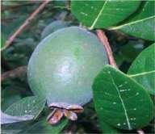

¿Cuál es su
origen?
¿Qué
características
tiene?
Es uno de los frutos nativos cuyo centro de origen está en la región sur de Brasil, Uruguay y algo de Argentina. Pertenece a la familia de las mirtáceas. Es una planta perenne, con una hermosa flor que da un fruto entre chico y mediano, de forma variable, que puede ser redondo u ovoide y alargado. Su piel de color verde varía mucho entre plantas, encontrando aquellos con cáscara fina o gruesa, así como lisa o rugosa. Los frutos de guayabo, desarrollan niveles muy altos de compuestos aromáticos, lo cual contribuye a diferenciarlos de otras especies.
¿Cuándo y cómo
se planta?
Crece muy bien de semilla pero es tan variable que difícilmente podemos predecir el tipo de fruto que dará una nueva planta a partir de una semilla. Por ello conviene realizar una multiplicación vegetativa cuyo procedimiento actualmente se está ajustando. Es preferible manejar las plantas en maceta ya que siempre están con hojas, por lo que podemos plantar en cualquier época si bien sufren menos en invierno. No es muy sensible a las heladas.
¿Cómo se
cuida?
Generalmente es una planta rústica y bien adaptada. El principal problema actual es la mosca de la fruta, que se mete en ella al acercarse el momento de cosechar. Para evitarla, podemos colocar trampas o usar repelentes ya sea a través de cultivos asociados o aplicando preparados.
¿Cómo se
cosecha?
Están prontos para cosechar en marzo – abril. Resulta difícil identificar el momento exacto de cosecha y para ello es frecuente sacudir suavemente las ramas, ya que los frutos maduros se desprenden fácilmente. Si bien son relativamente más resistentes a la manipulación que otros frutos, deben ser tratados cuidadosamente para que se conserven varios días.
¿Cómo se
consume?
Es apetecible para el consumo en fresco y para la elaboración de dulces y mermeladas.
¿Qué nos
aporta?
Es una importante fuente de vitaminas A y C, así como de compuestos fenólicos asociados a un alto nivel de capacidad
antioxidante.
Prestar
atención a:
El origen de las plantas es importante ya que son altamente variables y podemos estar plantando algo distinto a lo que queremos.